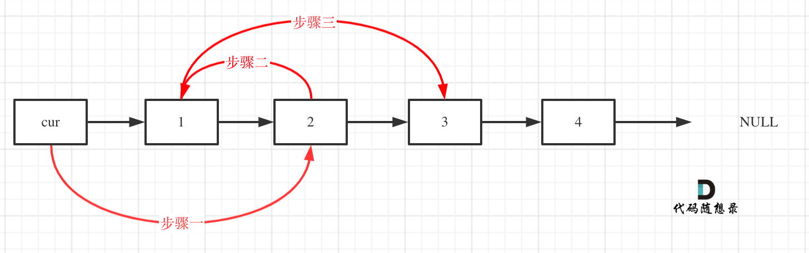
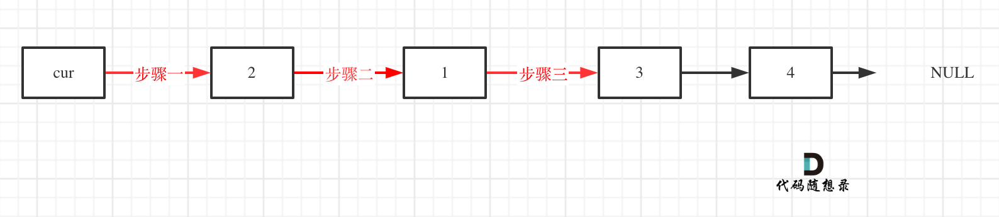

# 排序算法总结
| 排序算法 | 英文名称 | 时间复杂度 | 最佳情况 | 最坏情况 | 空间复杂度 | 排序方式 | 稳定性 | 排序类型 |
|---|---|---|---|---|---|---|---|---|
| 冒泡排序 | Bubble Sort | O(n²) | O(n) | O(n²) | O(1) | In-place | 稳定 | 比较 |
| 插入排序 | Insertion Sort | O(n²) | O(n) | O(n²) | O(1) | In-place | 稳定 | 比较 |
| 选择排序 | Selection Sort | O(n²) | O(n²) | O(n²) | O(1) | In-place | 不稳定 | 比较 |
| 希尔排序 | Shell Sort | O(n^3/2) | O(nlog²n) | O(n²) | O(1) | In-place | 不稳定 | 比较 |
| 快速排序 | Quick Sort | O(nlogn) | O(nlogn) | O(n²) | O(logn) | In-place | 不稳定 | 比较 |
| 堆排序 | Heap Sort | O(nlogn) | O(nlogn) | O(nlogn) | O(1) | In-place | 不稳定 | 比较 |
| 归并排序 | Merge Sort | O(nlogn) | O(nlogn) | O(nlogn) | O(n) | Out-place | 稳定 | 比较 |
| 桶排序 | Bucket Sort | Out-place | 稳定 | 非比较 | ||||
| 基数排序 | Radix Sort | Out-place | 稳定 | 非比较 | ||||
| 计数排序 | Counting Sort | Out-place | 稳定 | 非比较 |
- 稳定：如果原本序列中 a 在 b 前面且 a=b，排序后 a 仍在 b 前面，顺序不变；
- 不稳定：如果原本序列中 a 在 b 前面且 a=b，排序后 a 可能在 b 后面，顺序可能发生改变；
- 内排序：所有排序操作均在内存中完成；
- 外排序：由于数据量太大，将其放入磁盘中，排序过程中需要磁盘与内存之间的数据传输；
- 时间复杂度：一个排序算法在执行过程中所耗费的时间量级的度量；
- 空间复杂度：一个排序算法在运行过程中临时占用存储空间大小的度量；
# 冒泡排序
遍历所有的数据，每次对相邻元素进行两两比较，如果顺序和预先规定的顺序不一致，则进行位置交换；这样一次遍历会将最大或最小的数据上浮至顶端，之后再重复同样的操作，直到所有的数据有序。数据反序时，耗时最长 O (n²)；数据正序时，耗时最短 O (n)。
// 冒泡排序 | |
template <class T> | |
void BubbleSort(T data[],int n) | |
{ | |
int flag=0; | |
for(int i=0;i<n;i++) | |
{ | |
flag=0; | |
for(int j=1;j<n-i;j++) | |
{ | |
if(data[j]<data[j-1]) | |
{ | |
flag=1; | |
T t=data[j]; | |
data[j]=data[j-1]; | |
data[j-1]=t; | |
} | |
} | |
if(flag==0) | |
return; | |
} | |
} |
# 快速排序
快速排序采用分治法。首先从数列中挑出一个元素作为中间值。依次遍历数据，所有比中间值小的元素放在左边，所有比中间值大的元素放在右边。然后按此方法对左右两个子序列分别进行递归操作，直到所有数据有序。最理想的情况是，每次划分所选择的中间数恰好将当前序列几乎等分（均匀排布），整个算法的时间复杂度为 O (n logn)。 最坏的情况是，每次所选的中间数是当前序列中的最大或最小元素（正序和逆序都是最坏），整个排序算法的时间复杂度为 O (n²)。
// 快速排序 | |
template <class T> | |
int Partition(T data[],int left,int right) | |
{ | |
T pivot=data[left]; | |
while(left<right) | |
{ | |
while(left<right&&data[right]>pivot) | |
right--; | |
data[left]=data[right]; | |
while(left<right&&data[left]<=pivot) | |
left++; | |
data[right]=data[left]; | |
} | |
data[left]=pivot; | |
return left; | |
} | |
template <class T> | |
void QuickSort(T data[],int left,int right) | |
{ | |
if(left<right) | |
{ | |
int p=Partition(data,left,right); | |
QuickSort(data,left,p-1); | |
QuickSort(data,p+1,right); | |
} | |
} |
# 算法性能分析
# 时间复杂度分析
# 什么是时间复杂度
时间复杂度是一个函数，它定性描述该算法的运行时间。
我们在软件开发中，时间复杂度就是用来方便开发者估算出程序运行的答题时间。
那么该如何估计程序运行时间呢，通常会估算算法的操作单元数量来代表程序消耗的时间，这里默认 CPU 的每个单元运行消耗的时间都是相同的。
假设算法的问题规模为 n，那么操作单元数量便用函数 f (n) 来表示，随着数据规模 n 的增大，算法执行时间的增长率和 f (n) 的增长率相同，这称作为算法的渐近时间复杂度，简称时间复杂度，记为 O (f (n))。
# 什么是大 O
算法导论给出的解释：大 O 用来表示上界的，当用它作为算法的最坏情况运行时间的上界，就是对任意数据输入的运行时间的上界。
同样算法导论给出了例子：拿插入排序来说，插入排序的时间复杂度我们都说是 O (n^2) 。
输入数据的形式对程序运算时间是有很大影响的，在数据本来有序的情况下时间复杂度是 O (n)，但如果数据是逆序的话，插入排序的时间复杂度就是 O (n2)，也就对于所有输入情况来说，最坏是 O (n2) 的时间复杂度，所以称插入排序的时间复杂度为 O (n^2)。
同样的同理再看一下快速排序，都知道快速排序是 O (nlogn)，但是当数据已经有序情况下，快速排序的时间复杂度是 O (n^2) 的，所以严格从大 O 的定义来讲，快速排序的时间复杂度应该是 O (n^2)。
但是我们依然说快速排序是 O (nlogn) 的时间复杂度，这个就是业内的一个默认规定，这里说的 O 代表的就是一般情况，而不是严格的上界。
我们主要关心的还是一般情况下的数据形式。
面试中说道算法的时间复杂度是多少指的都是一般情况。但是如果面试官和我们深入探讨一个算法的实现以及性能的时候，就要时刻想着数据用例的不一样，时间复杂度也是不同的，这一点是一定要注意的。
# 不同数据规模的差异

如图中可以看出不同算法的时间复杂度在不同数据输入规模下的差异。
在决定使用哪些算法的时候，不是时间复杂越低的越好（因为简化后的时间复杂度忽略了常数项等等），要考虑数据规模，如果数据规模很小甚至可以用 O (n^2) 的算法比 O (n) 的更合适（在有常数项的时候）。
就像上图中 O (5n^2) 和 O (100n) 在 n 为 20 之前 很明显 O (5n^2) 是更优的，所花费的时间也是最少的。
那为什么在计算时间复杂度的时候要忽略常数项系数呢，也就说 O (100n) 就是 O (n) 的时间复杂度，O (5n^2) 就是 O (n^2) 的时间复杂度，而且要默认 O (n) 优于 O (n^2) 呢 ？
这里就又涉及到大 O 的定义，因为大 O 就是数据量级突破一个点且数据量级非常大的情况下所表现出的时间复杂度，这个数据量也就是常数项系数已经不起决定性作用的数据量。
例如上图中 20 就是那个点，n 只要大于 20 常数项系数已经不起决定性作用了。
所以我们说的时间复杂度都是省略常数项系数的，是因为一般情况下都是默认数据规模足够的大，基于这样的事实，给出的算法时间复杂的的一个排行如下所示：
O (1) 常数阶 < O (logn) 对数阶 < O (n) 线性阶 < O (nlogn) 线性对数阶 < O (n^2) 平方阶 < O (n^3) 立方阶 < O (2^n) 指数阶
但是也要注意大常数，如果这个常数非常大，例如 10^7 ，10^9 ，那么常数就是不得不考虑的因素了。
# 数组
** 数组是存放在连续内存空间上的相同类型数据的集合。** 数组可以方便的通过下标索引的方式获取到下标下对应的数据。
- 数组下标都是从 0 开始的。
- 数组内存空间的地址是连续的
正是因为数组的在内存空间的地址是连续的，所以我们在删除或者增添元素的时候，就难免要移动其他元素的地址。
使用 C++ 的话，要注意 vector 和 array 的区别，vector 的底层实现是 array，严格来讲 vector 是容器，不是数组。
数组的元素是不能删的，只能覆盖。
# 二分查找
# 二分查找 - LeetCode704
704. 二分查找 - 力扣（LeetCode）
给定一个 n 个元素有序的（升序）整型数组 nums 和一个目标值 target ，写一个函数搜索 nums 中的 target，如果目标值存在返回下标，否则返回 -1。
示例 1:
输入: nums = [-1,0,3,5,9,12], target = 9
输出: 4
解释: 9 出现在 nums 中并且下标为 4示例 2:
输入: nums = [-1,0,3,5,9,12], target = 2
输出: -1
解释: 2 不存在 nums 中因此返回 -1提示：你可以假设 nums 中的所有元素是不重复的。
n 将在 [1, 10000] 之间。
nums 的每个元素都将在 [-9999, 9999] 之间。
这道题目的前提是数组为有序数组，同时题目还强调数组中无重复元素，因为一旦有重复元素，使用二分查找法返回的元素下标可能不是唯一的，这些都是使用二分法的前提条件。
二分查找涉及的很多的边界条件，逻辑比较简单，但就是写不好。例如到底是 while(left < right) 还是 while(left <= right) ，到底是 right = middle 呢，还是要 right = middle - 1 呢？
大家写二分法经常写乱，主要是因为对区间的定义没有想清楚，区间的定义就是不变量。要在二分查找的过程中，保持不变量，就是在 while 寻找中每一次边界的处理都要坚持根据区间的定义来操作，这就是循环不变量规则。
写二分法，区间的定义一般为两种，左闭右闭即 [left, right]，或者左闭右开即 [left, right)。
# 二分法第一种写法
第一种写法，我们定义 target 是在一个在左闭右闭的区间里，也就是 [left, right] （这个很重要非常重要）。
区间的定义这就决定了二分法的代码应该如何写，因为定义 target 在 [left, right] 区间，所以有如下两点：
- while (left <= right) 要使用 <= ，因为 left == right 是有意义的，所以使用 <=
- if (nums [middle] > target) right 要赋值为 middle - 1，因为当前这个 nums [middle] 一定不是 target，那么接下来要查找的左区间结束下标位置就是 middle - 1
例如在数组：1,2,3,4,7,9,10 中查找元素 2，如图所示：

class Solution { | |
public: | |
int search(vector<int>& nums, int target) { | |
int left = 0; | |
int right = nums.size() - 1; // 定义 target 在左闭右闭的区间里，[left, right] | |
while (left <= right) { // 当 left==right，区间 [left, right] 依然有效，所以用 <= | |
int middle = left + ((right - left) / 2);// 防止溢出 等同于 (left + right)/2 | |
if (nums[middle] > target) { | |
right = middle - 1; //target 在左区间，所以 [left, middle - 1] | |
} else if (nums[middle] < target) { | |
left = middle + 1; //target 在右区间，所以 [middle + 1, right] | |
} else { // nums[middle] == target | |
return middle; // 数组中找到目标值，直接返回下标 | |
} | |
} | |
// 未找到目标值 | |
return -1; | |
} | |
}; |
- 时间复杂度：O (log n)
- 空间复杂度：O (1)
# 二分法第二种写法
如果说定义 target 是在一个在左闭右开的区间里，也就是 [left, right) ，那么二分法的边界处理方式则截然不同。
有如下两点：
- while (left < right)，这里使用 < , 因为 left == right 在区间 [left, right) 是没有意义的
- if (nums [middle] > target) right 更新为 middle，因为当前 nums [middle] 不等于 target，去左区间继续寻找，而寻找区间是左闭右开区间，所以 right 更新为 middle，即：下一个查询区间不会去比较 nums [middle]
在数组：1,2,3,4,7,9,10 中查找元素 2，如图所示：（注意和方法一的区别）

class Solution { | |
public: | |
int search(vector<int>& nums, int target) { | |
int left = 0; | |
int right = nums.size(); // 定义 target 在左闭右开的区间里，即：[left, right) | |
while (left < right) { // 因为 left == right 的时候，在 [left, right) 是无效的空间，所以使用 < | |
int middle = left + ((right - left) >> 1); | |
if (nums[middle] > target) { | |
right = middle; //target 在左区间，在 [left, middle) 中 | |
} else if (nums[middle] < target) { | |
left = middle + 1; //target 在右区间，在 [middle + 1, right) 中 | |
} else { // nums[middle] == target | |
return middle; // 数组中找到目标值，直接返回下标 | |
} | |
} | |
// 未找到目标值 | |
return -1; | |
} | |
}; |
- 时间复杂度：O (log n)
- 空间复杂度：O (1)
# 总结
二分法是非常重要的基础算法，为什么会对二分法一看就会，一写就废？其实主要就是对区间的定义没有理解清楚，在循环中没有始终坚持根据查找区间的定义来做边界处理。
区间的定义就是不变量，那么在循环中坚持根据查找区间的定义来做边界处理，就是循环不变量规则。
# = 相关题目 =
# 搜索插入位置 - LeetCode35
# 在排序数组中查找元素的第一个和最后一个位置 - LeetCode34
# x 的平方根 - LeetCode69
# 有效的完全平方数 - LeetCode367
# 移除元素
# 移除元素 - LeetCode27
27. 移除元素 - 力扣（LeetCode）)
给你一个数组 nums 和一个值 val ，你需要 原地 移除所有数值等于 val 的元素，并返回移除后数组的新长度。
不要使用额外的数组空间，你必须仅使用 O (1) 额外空间并 原地 修改输入数组。
元素的顺序可以改变。你不需要考虑数组中超出新长度后面的元素。
说明:
为什么返回数值是整数，但输出的答案是数组呢？
请注意，输入数组是以「引用」方式传递的，这意味着在函数里修改输入数组对于调用者是可见的。
你可以想象内部操作如下:
//nums 是以 “引用” 方式传递的。也就是说，不对实参作任何拷贝 | |
int len = removeElement(nums, val); | |
// 在函数里修改输入数组对于调用者是可见的。 | |
// 根据你的函数返回的长度，它会打印出数组中 该长度范围内 的所有元素。 | |
for (int i = 0; i < len; i++) { | |
print(nums[i]); | |
} |
示例 1：
输入：nums = [3,2,2,3], val = 3
输出：2, nums = [2,2]
解释：函数应该返回新的长度 2, 并且 nums 中的前两个元素均为 2。你不需要考虑数组中超出新长度后面的元素。例如，函数返回的新长度为 2 ，而 nums = [2,2,3,3] 或 nums = [2,2,0,0]，也会被视作正确答案。
示例 2：
输入：nums = [0,1,2,2,3,0,4,2], val = 2
输出：5, nums = [0,1,4,0,3]
解释：函数应该返回新的长度 5, 并且 nums 中的前五个元素为 0, 1, 3, 0, 4。注意这五个元素可为任意顺序。你不需要考虑数组中超出新长度后面的元素。
提示：
- 0 <= nums.length <= 100
- 0 <= nums[i] <= 50
- 0 <= val <= 100
注意：数组的元素在内存地址中是连续的，不能单独删除数组中的某个元素，只能覆盖。
# 暴力解法
两层 for 循环，一个 for 循环遍历数组元素 ，第二个 for 循环更新数组
// 时间复杂度 O (n^2) | |
class Solution { | |
public: | |
int removeElement(vector<int>& nums, int val) { | |
int size = nums.size(); | |
for (int i = 0; i < size; i++) { | |
if (nums[i] == val) { // 发现需要移除的元素，就将数组集体向前移动一位 | |
for (int j = i + 1; j < size; j++) { | |
nums[j - 1] = nums[j]; | |
} | |
i--; // 因为下标 i 以后的数值都向前移动了一位，所以 i 也向前移动一位 | |
size--; // 此时数组的大小 - 1 | |
} | |
} | |
return size; | |
} | |
}; |
# 双指针法
双指针法（快慢指针法）： 通过一个快指针和慢指针在一个 for 循环下完成两个 for 循环的工作。
定义快慢指针
- 快指针：寻找新数组的元素 ，新数组就是不含有目标元素的数组
- 慢指针：指向更新 新数组下标的位置
双指针法（快慢指针法）在数组和链表的操作中是非常常见的，很多考察数组、链表、字符串等操作的面试题，都使用双指针法。
// 时间复杂度：O (n) | |
class Solution { | |
public: | |
int removeElement(vector<int>& nums, int val) { | |
int slowIndex = 0; | |
for (int fastIndex = 0; fastIndex < nums.size(); fastIndex++) { | |
if (val != nums[fastIndex]) { | |
nums[slowIndex++] = nums[fastIndex]; | |
} | |
} | |
return slowIndex; | |
} | |
}; |
/** | |
* 相向双指针方法，基于元素顺序可以改变的题目描述改变了元素相对位置，确保了移动最少元素 | |
* 时间复杂度：O (n) | |
* 空间复杂度：O (1) | |
*/ | |
class Solution { | |
public: | |
int removeElement(vector<int>& nums, int val) { | |
int leftIndex = 0; | |
int rightIndex = nums.size() - 1; | |
while (leftIndex <= rightIndex) { | |
// 找左边等于 val 的元素 | |
while (leftIndex <= rightIndex && nums[leftIndex] != val){ | |
++leftIndex; | |
} | |
// 找右边不等于 val 的元素 | |
while (leftIndex <= rightIndex && nums[rightIndex] == val) { | |
-- rightIndex; | |
} | |
// 将右边不等于 val 的元素覆盖左边等于 val 的元素 | |
if (leftIndex < rightIndex) { | |
nums[leftIndex++] = nums[rightIndex--]; | |
} | |
} | |
return leftIndex; //leftIndex 一定指向了最终数组末尾的下一个元素 | |
} | |
}; |
# = 相关题目 =
# 删除排序数组中的重复项 - LeetCode26
# 移动零 - LeetCode283
# 比较含退格的字符串 - LeetCode844
# 有序数组的平方 - LeetCode977
# 链表
# 链表理论基础
# 单链表
链表是一种通过指针串联在一起的线性结构，每一个节点由两部分组成，一个是数据域一个是指针域（存放指向下一个节点的指针），最后一个节点的指针域指向 null。链表的入口节点称为链表的头结点也就是 head。
如图所示：

# 双链表
单链表中的指针域只能指向节点的下一个节点。
双链表：每一个节点有两个指针域，一个指向下一个节点，一个指向上一个节点。
双链表 既可以向前查询也可以向后查询。
如图所示：

# 循环链表
顾名思义，就是链表首尾相连。循环链表可以用来解决约瑟夫环问题。
# 链表的存储方式
数组是在内存中是连续分布的，但是链表在内存中不是连续分布的。链表是通过指针域的指针链接在内存中各个节点。所以链表中的节点在内存中不是连续分布的 ，而是散乱分布在内存中的某地址上，分配机制取决于操作系统的内存管理。
# 链表的定义
// 单链表 | |
struct ListNode { | |
int val; // 节点上存储的元素 | |
ListNode *next; // 指向下一个节点的指针 | |
ListNode(int x) : val(x), next(NULL) {} // 节点的构造函数 | |
}; |
不定义构造函数行不行？
答案是可以的，C++ 默认生成一个构造函数。但是这个构造函数不会初始化任何成员变量，下面举两个例子：
通过自己定义构造函数初始化节点：
ListNode* head = new ListNode(5); |
使用默认构造函数初始化节点：
ListNode* head = new ListNode(); | |
head->val = 5; |
所以如果不定义构造函数使用默认构造函数的话，在初始化的时候就不能直接给变量赋值。
# 移除链表元素 - LeetCode203
203. 移除链表元素 - 力扣（LeetCode）
给你一个链表的头节点
head和一个整数val，请你删除链表中所有满足Node.val == val的节点，并返回 新的头节点示例 1： 输入：head = [1,2,6,3,4,5,6], val = 6 输出：[1,2,3,4,5]
示例 2： 输入：head = [], val = 1 输出：[]
示例 3： 输入：head = [7,7,7,7], val = 7 输出：[]
提示：
- 列表中的节点数目在范围
[0, 104]内1 <= Node.val <= 500 <= val <= 50
- 直接使用原来的链表来进行删除操作。

移除头结点和移除其他节点的操作是不一样的，因为链表的其他节点都是通过前一个节点来移除当前节点，而头结点没有前一个节点。
所以头结点如何移除呢，其实只要将头结点向后移动一位就可以，这样就从链表中移除了一个头结点，然后将原头结点从内存中删掉。
class Solution { | |
public: | |
ListNode* removeElements(ListNode* head, int val) { | |
// 删除头结点 | |
while (head != NULL && head->val == val) { // 注意这里不是 if | |
ListNode* tmp = head; | |
head = head->next; | |
delete tmp; | |
} | |
// 删除非头结点 | |
ListNode* cur = head; | |
while (cur != NULL && cur->next!= NULL) { | |
if (cur->next->val == val) { | |
ListNode* tmp = cur->next; | |
cur->next = cur->next->next; | |
delete tmp; | |
} else { | |
cur = cur->next; | |
} | |
} | |
return head; | |
} | |
}; |
- 设置一个虚拟头结点在进行删除操作。
可以以一种统一的逻辑来移除链表的节点。设置一个虚拟头结点，这样原链表的所有节点就都可以按照统一的方式进行移除了。

这里来给链表添加一个虚拟头结点为新的头结点，此时要移除这个旧头结点元素 1。
最后在题目中，return 头结点的时候，别忘了 return dummyNode->next; ， 这才是新的头结点
class Solution { | |
public: | |
ListNode* removeElements(ListNode* head, int val) { | |
ListNode* dummyHead = new ListNode(0); // 设置一个虚拟头结点 | |
dummyHead->next = head; // 将虚拟头结点指向 head，这样方面后面做删除操作 | |
ListNode* cur = dummyHead; | |
while (cur->next != NULL) { | |
if(cur->next->val == val) { | |
ListNode* tmp = cur->next; | |
cur->next = cur->next->next; | |
delete tmp; | |
} else { | |
cur = cur->next; | |
} | |
} | |
head = dummyHead->next; | |
delete dummyHead; | |
return head; | |
} | |
}; |
# 设计链表 - LeetCode707
707. 设计链表 - 力扣（LeetCode）
在链表类中实现这些功能：
- get (index)：获取链表中第 index 个节点的值。如果索引无效，则返回 - 1。
- addAtHead (val)：在链表的第一个元素之前添加一个值为 val 的节点。插入后，新节点将成为链表的第一个节点。
- addAtTail (val)：将值为 val 的节点追加到链表的最后一个元素。
- addAtIndex (index,val)：在链表中的第 index 个节点之前添加值为 val 的节点。如果 index 等于链表的长度，则该节点将附加到链表的末尾。如果 index 大于链表长度，则不会插入节点。如果 index 小于 0，则在头部插入节点。
- deleteAtIndex (index)：如果索引 index 有效，则删除链表中的第 index 个节点。
示例：
输入
[“MyLinkedList”, “addAtHead”, “addAtTail”, “addAtIndex”, “get”, “deleteAtIndex”, “get”]
[[], [1], [3], [1, 2], [1], [1], [1]]
输出
[null, null, null, null, 2, null, 3]解释
MyLinkedList myLinkedList = new MyLinkedList ();
myLinkedList.addAtHead(1);
myLinkedList.addAtTail(3);
myLinkedList.addAtIndex (1, 2); // 链表变为 1->2->3
myLinkedList.get (1); // 返回 2
myLinkedList.deleteAtIndex (1); // 现在，链表变为 1->3
myLinkedList.get (1); // 返回 3提示：
0 <= index, val <= 1000
请不要使用内置的 LinkedList 库。
调用 get、addAtHead、addAtTail、addAtIndex 和 deleteAtIndex 的次数不超过 2000 。
这道题目设计链表的五个接口：
- 获取链表第 index 个节点的数值
- 在链表的最前面插入一个节点
- 在链表的最后面插入一个节点
- 在链表第 index 个节点前面插入一个节点
- 删除链表的第 index 个节点
这五个接口，已经覆盖了链表的常见操作
链表操作的两种方式：
- 直接使用原来的链表来进行操作。
- 设置一个虚拟头结点在进行操作。
下面采用的设置一个虚拟头结点（这样更方便一些，看代码就会感受出来）。
class MyLinkedList { | |
public: | |
// 定义链表节点结构体 | |
struct LinkedNode { | |
int val; | |
LinkedNode* next; | |
LinkedNode(int val):val(val), next(nullptr){} | |
}; | |
// 初始化链表 | |
MyLinkedList() { | |
_dummyHead = new LinkedNode(0); // 这里定义的头结点 是一个虚拟头结点，而不是真正的链表头结点 | |
_size = 0; | |
} | |
// 获取到第 index 个节点数值，如果 index 是非法数值直接返回 - 1， 注意 index 是从 0 开始的，第 0 个节点就是头结点 | |
int get(int index) { | |
if (index > (_size - 1) || index < 0) { | |
return -1; | |
} | |
LinkedNode* cur = _dummyHead->next; | |
while(index--){ // 如果 --index 就会陷入死循环 | |
cur = cur->next; | |
} | |
return cur->val; | |
} | |
// 在链表最前面插入一个节点，插入完成后，新插入的节点为链表的新的头结点 | |
void addAtHead(int val) { | |
LinkedNode* newNode = new LinkedNode(val); | |
newNode->next = _dummyHead->next; | |
_dummyHead->next = newNode; | |
_size++; | |
} | |
// 在链表最后面添加一个节点 | |
void addAtTail(int val) { | |
LinkedNode* newNode = new LinkedNode(val); | |
LinkedNode* cur = _dummyHead; | |
while(cur->next != nullptr){ | |
cur = cur->next; | |
} | |
cur->next = newNode; | |
_size++; | |
} | |
// 在第 index 个节点之前插入一个新节点，例如 index 为 0，那么新插入的节点为链表的新头节点。 | |
// 如果 index 等于链表的长度，则说明是新插入的节点为链表的尾结点 | |
// 如果 index 大于链表的长度，则返回空 | |
// 如果 index 小于 0，则在头部插入节点 | |
void addAtIndex(int index, int val) { | |
if(index > _size) return; | |
if(index < 0) index = 0; | |
LinkedNode* newNode = new LinkedNode(val); | |
LinkedNode* cur = _dummyHead; | |
while(index--) { | |
cur = cur->next; | |
} | |
newNode->next = cur->next; | |
cur->next = newNode; | |
_size++; | |
} | |
// 删除第 index 个节点，如果 index 大于等于链表的长度，直接 return，注意 index 是从 0 开始的 | |
void deleteAtIndex(int index) { | |
if (index >= _size || index < 0) { | |
return; | |
} | |
LinkedNode* cur = _dummyHead; | |
while(index--) { | |
cur = cur ->next; | |
} | |
LinkedNode* tmp = cur->next; | |
cur->next = cur->next->next; | |
delete tmp; | |
_size--; | |
} | |
// 打印链表 | |
void printLinkedList() { | |
LinkedNode* cur = _dummyHead; | |
while (cur->next != nullptr) { | |
cout << cur->next->val << " "; | |
cur = cur->next; | |
} | |
cout << endl; | |
} | |
private: | |
int _size; | |
LinkedNode* _dummyHead; | |
}; |
# 翻转链表 - LeetCode206
206. 反转链表 - 力扣（LeetCode）
给你单链表的头节点 head ，请你反转链表，并返回反转后的链表。
示例：输入: 1->2->3->4->5->NULL 输出: 5->4->3->2->1->NULL
提示：
- 链表中节点的数目范围是
[0, 5000] -5000 <= Node.val <= 5000
** 进阶：** 链表可以选用迭代或递归方式完成反转。
# 双指针法
首先定义一个 cur 指针，指向头节点，再定义一个 pre 指针，初始化为 null 。
然后开始反转，先把 cur->next 节点用 tmp 指针保存一下，也就是保存一下这个节点。因为接下来要改变 cur->next 的指向，将 cur->next 指向 pre ，此时已经反转了第一个节点了。
接下来，就是循环走如下代码逻辑，继续移动 pre 和 cur 指针。
最后 cur 指针已经指向 null，循环结束，连边反转完毕。此时，return pre 指针就可以了，pre 指针指向了新的头节点。
class Solution { | |
public: | |
ListNode* reverseList(ListNode* head) { | |
ListNode* temp; // 保存 cur 的下一个节点 | |
ListNode* cur = head; | |
ListNode* pre = NULL; | |
while(cur) { | |
temp = cur->next; // 保存一下 cur 的下一个节点，因为接下来要改变 cur->next | |
cur->next = pre; // 翻转操作 | |
// 更新 pre 和 cur 指针 | |
pre = cur; | |
cur = temp; | |
} | |
return pre; | |
} | |
} |
# 递归法
递归法相对抽象一些，但是其实和双指针法是一样的逻辑，同样是当 cur 为空的时候循环结束，不断将 cur 指向 pre 的过程。
关键是初始化的地方，可以看到双指针法中初始化 cur = head，pre = NULL，在递归法中可以从如下代码看出初始化的逻辑也是一样的，只不过写法变了。
class Solution { | |
public: | |
ListNode* reverse(ListNode* pre,ListNode* cur){ | |
if(cur == NULL) return pre; | |
ListNode* temp = cur->next; | |
cur->next = pre; | |
// 可以和双指针法的代码进行对比，如下递归的写法，其实就是做了这两步 | |
// pre = cur; | |
// cur = temp; | |
return reverse(cur,temp); | |
} | |
ListNode* reverseList(ListNode* head) { | |
// 和双指针法初始化是一样的逻辑 | |
// ListNode* cur = head; | |
// ListNode* pre = NULL; | |
return reverse(NULL, head); | |
} | |
}; |
我们可以发现，上面的递归写法和双指针法实质上都是从前往后翻转指针指向，其实还有另外一种与双指针法不同思路的递归写法：从后往前翻转指针指向。
class Solution { | |
public: | |
ListNode* reverseList(ListNode* head) { | |
// 边缘条件判断 | |
if(head == NULL) return NULL; | |
if (head->next == NULL) return head; | |
// 递归调用，翻转第二个节点开始往后的链表 | |
ListNode *last = reverseList(head->next); | |
// 翻转头节点与第二个节点的指向 | |
head->next->next = head; | |
// 此时的 head 节点为尾节点，next 需要指向 NULL | |
head->next = NULL; | |
return last; | |
} |
# 使用虚拟头结点解决链表翻转
使用虚拟头结点，通过头插法实现链表的翻转（不需要栈）
// 迭代方法：增加虚头结点，使用头插法实现链表翻转 | |
public static ListNode reverseList1(ListNode head) { | |
// 创建虚头结点 | |
ListNode dumpyHead = new ListNode(-1); | |
dumpyHead.next = null; | |
// 遍历所有节点 | |
ListNode cur = head; | |
while(cur != null){ | |
ListNode temp = cur.next; | |
// 头插法 | |
cur.next = dumpyHead.next; | |
dumpyHead.next = cur; | |
cur = temp; | |
} | |
return dumpyHead.next; | |
} |
# 使用栈解决反转链表的问题
- 首先将所有的结点入栈
- 然后创建一个虚拟虚拟头结点，让 cur 指向虚拟头结点。然后开始循环出栈，每出来一个元素，就把它加入到以虚拟头结点为头结点的链表当中，最后返回即可。
public ListNode reverseList(ListNode head) { | |
// 如果链表为空，则返回空 | |
if (head == null) return null; | |
// 如果链表中只有只有一个元素，则直接返回 | |
if (head.next == null) return head; | |
// 创建栈 每一个结点都入栈 | |
Stack<ListNode> stack = new Stack<>(); | |
ListNode cur = head; | |
while (cur != null) { | |
stack.push(cur); | |
cur = cur.next; | |
} | |
// 创建一个虚拟头结点 | |
ListNode pHead = new ListNode(0); | |
cur = pHead; | |
while (!stack.isEmpty()) { | |
ListNode node = stack.pop(); | |
cur.next = node; | |
cur = cur.next; | |
} | |
// 最后一个元素的 next 要赋值为空 | |
cur.next = null; | |
return pHead.next; | |
} |
采用这种方法需要注意一点。就是当整个出栈循环结束以后，cur 正好指向原来链表的第一个结点，而此时结点 1 中的 next 指向的是结点 2，因此最后还需要 cur.next = null
# 两两交换链表中的节点 - LeetCode24
24. 两两交换链表中的节点 - 力扣（LeetCode）
给你一个链表，两两交换其中相邻的节点，并返回交换后链表的头节点。你必须在不修改节点内部的值的情况下完成本题（即，只能进行节点交换）。
初始时，cur 指向虚拟头结点，然后进行如下三步：

操作之后，链表如下：

class Solution { | |
public: | |
ListNode* swapPairs(ListNode* head) { | |
ListNode* dummyHead = new ListNode(0); // 设置一个虚拟头结点 | |
dummyHead->next = head; // 将虚拟头结点指向 head，这样方面后面做删除操作 | |
ListNode* cur = dummyHead; | |
while(cur->next != nullptr && cur->next->next != nullptr) { | |
ListNode* tmp = cur->next; // 记录临时节点 | |
ListNode* tmp1 = cur->next->next->next; // 记录临时节点 | |
cur->next = cur->next->next; // 步骤一 | |
cur->next->next = tmp; // 步骤二 | |
cur->next->next->next = tmp1; // 步骤三 | |
cur = cur->next->next; //cur 移动两位，准备下一轮交换 | |
} | |
return dummyHead->next; | |
} | |
}; |
# 哈希表
# 哈希表理论基础
# 哈希表
Hash table，译为哈希表或散列表
哈希表是根据关键码的值而直接进行访问的数据结构。
实际数组就是一张哈希表。哈希表中关键码就是数组的索引下标，然后通过下标直接访问数组中的元素，如下图所示：

哈希表能解决什么问题？
- 一般哈希表都是用来快速判断一个元素是否出现集合里。
例如要查询一个名字是否在这所学校里。
要枚举的话时间复杂度是 O (n)，但如果使用哈希表的话， 只需要 O (1) 就可以做到。
我们只需要初始化把这所学校里学生的名字都存在哈希表里，在查询的时候通过索引直接就可以知道这位同学在不在这所学校里了。
将学生姓名映射到哈希表上就涉及到了 hash function ，也就是哈希函数。
# 哈希函数
哈希函数，把学生的姓名直接映射为哈希表上的索引，然后就可以通过查询索引下标快速知道这位同学是否在这所学校里了。
哈希函数如下图所示，通过 hashCode 把名字转化为数值，一般 hashcode 是通过特定编码方式，可以将其他数据格式转化为不同的数值，这样就把学生名字映射为哈希表上的索引数字了。

如果 hashCode 得到的数值大于哈希表的大小了，也就是大于 tableSize 了，怎么办？
此时为了保证映射出来的索引数值都落在哈希表上，我们会在再次对数值做一个取模的操作，这样我们就保证了学生姓名一定可以映射到哈希表上了。
此时问题又来了，哈希表我们刚刚说过，就是一个数组。
如果学生的数量大于哈希表的大小怎么办，此时就算哈希函数计算的再均匀，也避免不了会有几位学生的名字同时映射到哈希表 同一个索引下标的位置。
接下来哈希碰撞登场
如图所示，小李和小王都映射到了索引下标 1 的位置，这一现象叫做哈希碰撞。

一般哈希碰撞有两种解决方法， 拉链法和线性探测法。
-
拉链法
刚刚小李和小王在索引 1 的位置发生了冲突，发生冲突的元素都被存储在链表中。 这样我们就可以通过索引找到小李和小王了

（数据规模是 dataSize， 哈希表的大小为 tableSize）
其实拉链法就是要选择适当的哈希表的大小，这样既不会因为数组空值而浪费大量内存，也不会因为链表太长而在查找上浪费太多时间。
-
线性探测法
使用线性探测法，一定要保证 tableSize 大于 dataSize。 我们需要依靠哈希表中的空位来解决碰撞问题。
例如冲突的位置，放了小李，那么就向下找一个空位放置小王的信息。所以要求 tableSize 一定要大于 dataSize ，要不然哈希表上就没有空置的位置来存放 冲突的数据了。如图所示：


# 常见的三种哈希结构
当我们想使用哈希法来解决问题的时候，我们一般会选择如下三种数据结构。
- array（数组）
- set（集合）
- map（映射）
在 C++ 中，set 和 map 分别提供以下三种数据结构，其底层实现以及优劣如下表所示：
| 集合 | 底层实现 | 是否有序 | 数值是否可以重复 | 能否更改数值 | 查询效率 | 增删效率 |
|---|---|---|---|---|---|---|
| std::set | 红黑树 | 有序 | 否 | 否 | O(log n) | O(log n) |
| std::multiset | 红黑树 | 有序 | 是 | 否 | O(logn) | O(logn) |
| std::unordered_set | 哈希表 | 无序 | 否 | 否 | O(1) | O(1) |
std::unordered_set 底层实现为哈希表，std::set 和 std::multiset 的底层实现是红黑树，红黑树是一种平衡二叉搜索树，所以 key 值是有序的，但 key 不可以修改，改动 key 值会导致整棵树的错乱，所以只能删除和增加。
| 映射 | 底层实现 | 是否有序 | 数值是否可以重复 | 能否更改数值 | 查询效率 | 增删效率 |
|---|---|---|---|---|---|---|
| std::map | 红黑树 | key 有序 | key 不可重复 | key 不可修改 | O(logn) | O(logn) |
| std::multimap | 红黑树 | key 有序 | key 可重复 | key 不可修改 | O(log n) | O(log n) |
| std::unordered_map | 哈希表 | key 无序 | key 不可重复 | key 不可修改 | O(1) | O(1) |
std::unordered_map 底层实现为哈希表，std::map 和 std::multimap 的底层实现是红黑树。同理，std::map 和 std::multimap 的 key 也是有序的（这个问题也经常作为面试题，考察对语言容器底层的理解）。
当我们要使用集合来解决哈希问题的时候，优先使用 unordered_set，因为它的查询和增删效率是最优的，如果需要集合是有序的，那么就用 set，如果要求不仅有序还要有重复数据的话，那么就用 multiset。
那么再来看一下 map ，在 map 是一个 key value 的数据结构，map 中，对 key 是有限制，对 value 没有限制的，因为 key 的存储方式使用红黑树实现的。
其他语言例如：java 里的 HashMap ，TreeMap 都是一样的原理。可以灵活贯通。
虽然 std::set、std::multiset 的底层实现是红黑树，不是哈希表，std::set、std::multiset 使用红黑树来索引和存储，不过给我们的使用方式，还是哈希法的使用方式，即 key 和 value。所以使用这些数据结构来解决映射问题的方法，我们依然称之为哈希法。 map 也是一样的道理。
# 字符串
# 栈与队列
# 二叉树
# 二叉树理论基础
# 二叉树的种类
-
满二叉树
如果一棵二叉树只有度为 0 的结点和度为 2 的结点，并且度为 0 的结点在同一层上，则这棵二叉树为满二叉树。

如图，这棵二叉树为满二叉树，也可以说深度为 k，有 2^k-1 个节点的二叉树。
-
完全二叉树
在完全二叉树中，除了最底层节点可能没填满外，其余每层节点数都达到最大值，并且最下面一层的节点都集中在该层最左边的若干位置。若最底层为第 h 层，则该层包含 1~ 2^(h-1) 个节点。

优先级队列其实是一个堆，堆就是一棵完全二叉树，同时保证父子节点的顺序关系。
-
二叉搜索树
前面介绍的树，都没有数值的，而二叉搜索树是有数值的了，二叉搜索树是一个有序树。
- 若它的左子树不空，则左子树上所有结点的值均小于它的根结点的值；
- 若它的右子树不空，则右子树上所有结点的值均大于它的根结点的值；
- 它的左、右子树也分别为二叉排序树
下面这两棵树都是搜索树

-
平衡二叉搜索树
又被称为 AVL（Adelson-Velsky and Landis）树，具有以下性质：它是一棵空树或它的左右两个子树的高度差的绝对值不超过 1，并且左右两个子树都是一棵平衡二叉树。

最后一棵 不是平衡二叉树，因为它的左右两个子树的高度差的绝对值超过了 1。
C++ 中 map、set、multimap，multiset 的底层实现都是平衡二叉搜索树，所以 map、set 的增删操作时间时间复杂度是 logn，注意 unordered_map、unordered_set，unordered_map、unordered_set 底层实现是哈希表。
一定要知道常用的容器底层都是如何实现的，最基本的就是 map、set 等


# 二叉树的存储方式
二叉树可以链式存储，也可以顺序存储。
那么链式存储方式就用指针， 顺序存储的方式就是用数组。
顾名思义就是顺序存储的元素在内存是连续分布的，而链式存储则是通过指针把分布在各个地址的节点串联一起。
链式存储如图：

顺序存储如图：

用数组来存储二叉树如何遍历的呢？
如果父节点的数组下标是 i，那么它的左孩子就是 i * 2 + 1，右孩子就是 i * 2 + 2。
但是用链式表示的二叉树，更有利于我们理解，所以一般我们都是用链式存储二叉树。
# 二叉树的遍历方式
二叉树主要有两种遍历方式：
- 深度优先遍历：先往深走，遇到叶子节点再往回走。
- 广度优先遍历：一层一层的去遍历。
这两种遍历是图论中最基本的两种遍历方式
那么从深度优先遍历和广度优先遍历进一步拓展，才有如下遍历方式：
- 深度优先遍历
- 前序遍历（递归法，迭代法）
- 中序遍历（递归法，迭代法）
- 后序遍历（递归法，迭代法）
- 广度优先遍历
- 层次遍历（迭代法）
在深度优先遍历中：有三个顺序，前中后序遍历
这里前中后，其实指的就是中间节点的遍历顺序，记住前中后序指的就是中间节点的位置就可以了。
看如下中间节点的顺序，就可以发现，中间节点的顺序就是所谓的遍历方式
- 前序遍历：中左右
- 中序遍历：左中右
- 后序遍历：左右中

最后再说一说二叉树中深度优先和广度优先遍历实现方式，我们做二叉树相关题目，经常会使用递归的方式来实现深度优先遍历，也就是实现前中后序遍历，使用递归是比较方便的。
之前我们讲栈与队列的时候，就说过栈其实就是递归的一种实现结构，也就说前中后序遍历的逻辑其实都是可以借助栈使用非递归的方式来实现的。
而广度优先遍历的实现一般使用队列来实现，这也是队列先进先出的特点所决定的，因为需要先进先出的结构，才能一层一层的来遍历二叉树。
# 二叉树的定义
struct TreeNode { | |
int val; | |
TreeNode *left; | |
TreeNode *right; | |
TreeNode(int x) : val(x), left(NULL), right(NULL) {} | |
}; |
二叉树的定义和链表是差不多的，相对于链表 ，二叉树的节点里多了一个指针， 有两个指针，指向左右孩子。